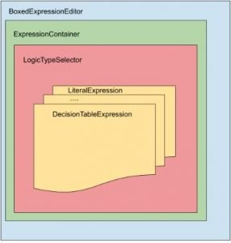
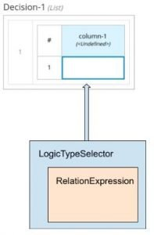

New DMN Boxed Expression Editor – What’s new?
We already talked about the importance of the Boxed Expression Editor.
In this article, let’s explore better the reasons which led to the new editor.
Moreover, we will provide more information about the new Boxed Expression Editor structure and how it will interact with the rest of the editor.
Why a new editor?
As already stated, the existing editor is just working fine. However, it has few limitations that are slowing down the development of new features.
Why is this happening? In my opinion, for two reasons:
- First, it uses a technology that is not so open to integrations. The current Boxed Expression Editor is built upon a list of libraries and layers that are Java-based. HTML/CSS/JS/React are standard technologies largely known by almost every client-side programmer today. While a custom model based on Canvas may be powerful, but the cost to maintain and do some UI changes can get too high. As soon as you need to extend an already existing functionality or cover a new use case, the estimations will start to grow exponentially.
- Second, it is a Canvas-based component: elements on the page are difficult to manipulate. You don’t have a 1:1 correspondence between displayed elements and DOM nodes. For instance, there is no node element for the table.
The above points caused several issues. Just to mention a couple:
- The fonts render slightly different in the Canvas and are more challenging to customize (compared to HTML/CSS features, primarily known and used).
- The lack of not having, in read-only mode, cells with highlighted FEEL expressions leads to a limitation of expressiveness of the editor.
New Boxed Expression Editor – Structure
The rewrite of the Boxed Expression Editor is following the new architectural standards established by Kogito-based projects.
It is just a React component that is shipped as part of the boxed-expression-component package application.
A tiny React application in the showcase folder shows how it can integrate the BoxedExpressionEditor component inside another application. We talked about showcases there.
The main component exported by this package is the BoxedExpressionEditor.tsx.
This React component follows the composition pattern, composing (and often reusing) different small parts together. In the picture below, you can have an idea of it.

Since you can also have nested expressions, you may find out that the LogicTypeSelector subtree is also repeated in the nested expression cell.
For example, a list can have several items. Furthermore, each item can be a different expression:

New Boxed Expression Editor – Integration
The new DMN Boxed Expression Editor works as a standalone and stateless React/TypeScript component.
It can be added anywhere in the editor, giving as input to it the node selector, where the component will be appended, and the expression to render.
A layer between the component and the DMN Editor will be responsible for converting and synchronizing the expression models with the jsInterop classes.
When the expression model changes, the component is re-rendered.
When the component edits the expression definition, it propagates the changes to the model by using the functions defined in a JavaScript namespace called beeApiWrapper.
On the DMN editor side, a service will listen to these functions and update the models accordingly.
Conclusion
Development in this area is still evolving. In the DMN editor, during this transition period, you will be able to switch between the old and the new Boxed Expression Editor with a single click:
Anyway, you have also the possibility to switch back to the old implementation if you find that something is not working as expected:
In that case, don’t worry! Improvement is continuously in progress. Just remember to submit feedback that will help us to improve the new Boxed Expression Editor!